Conference and Journal Papers
- 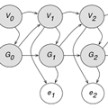 Li Y., Lu H. and Zhang H. Optimistic Programming of Touch Interaction. TOCHI 2014 (pdf)
-
 Lu H., Fogarty J. and Li Y. Gesture script:
recognizing gestures and their structure using rendering scripts and
interactively trained parts. CHI 2014.
(pdf) -- Best
Paper Nominee
Lu H., Fogarty J. and Li Y. Gesture script:
recognizing gestures and their structure using rendering scripts and
interactively trained parts. CHI 2014.
(pdf) -- Best
Paper Nominee
- 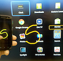 Lu H., Negulescu M. and Li Y. Gesturemote: Interacting with Remote Displays through Touch Gestures. AVI 2014. (pdf)
- 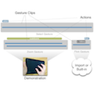 Lu H. and Li Y. Gesture Studio: Authoring Multi-Touch Interactions through Demonstration and Declaration. CHI 2013. (pdf)
- 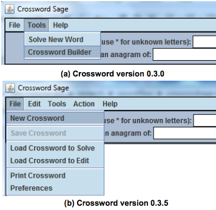 Zhang S., Lu, H., and Ernst M. D. Automatically Repairing Broken Workflows for Evolving GUI Applications. ISSTA 2013. (pdf)
- 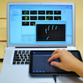 Lu H. and Li Y. Gesture Coder: A Tool for Programming Multi-Touch Gestures by Demonstration. CHI 2012. (pdf) -- Best Paper Nominee
- 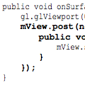 Zhang S., Lu, H., and Ernst M. D. Finding Errors in Multithreaded GUI Applications. ISSTA 2012. (pdf)
- 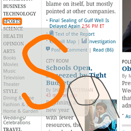 Lu H. and Li Y. Gesture Avatar: A Technique for Operating Mobile User Interfaces Using Gestures. CHI 2011. (pdf)
- 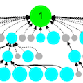 Cooper S., Khatib F., Makedon I., Lu H., Barbero J, Baker D., Fogarty J., Popovic Z. and Foldit Players. Analysis of Social Gameplay Macros in the Foldit Cookbook. FDG 2011. (pdf)
- 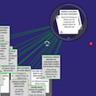 Basu S., Fisher D., Drucker S., and Lu H. Assisting Users with Clustering Tasks by Combining Metric Learning and Classification. AAAI 2010. (pdf)
- 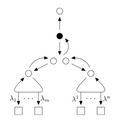 Fu Y. and Lu H. On the expressiveness of interaction. Theoretical Computer Science 2010. (pdf)
- 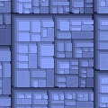 Lu H. and Fogarty J. Cascaded Treemaps: Examining the Visibility and Stability of Structure in Treemaps. GI 2008. (pdf)
Technical Reports
- 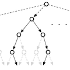 Lu H. and Fogarty J. Crowd-Logic: Implementing and Optimizing Human Computation Algorithms using Logic Programming. Technical Report 2012. (pdf)